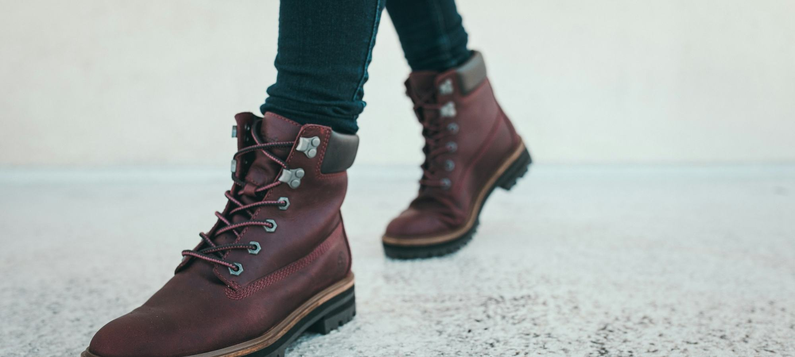
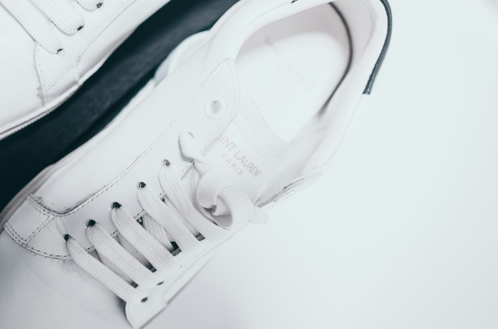

Quelles sont les meilleures baskets blanches pour femme en 2026 ?
Sept paires de baskets blanches, de 89 à 495 €, portées et comparées sur cinq critères affichés avec leur poids.

Bottines, bottes, baskets, ballerines. Nous relevons l'origine et le cuir de chaque paire, nous les portons une semaine en ville, puis nous classons.

Sept paires de baskets blanches, de 89 à 495 €, portées et comparées sur cinq critères affichés avec leur poids.


Sept paires de baskets blanches, de 89 à 495 €, portées et comparées sur cinq critères affichés avec leur poids.
Dix marques, dix cabas phares, cinq critères pondérés et affichés avant le classement.
Huit maisons françaises, une idée cadeau phare par maison et une trentaine de pièces relevées entre 75 et 450 €.
Douze maisons françaises de maroquinerie comparées sur leur modèle phare, leurs matières, l'origine qu'elles affichent et leur fourchette de prix, de 125 à 890 €.
Neuf cabas en cuir, de 289 € à 680 €, notés sur cinq critères dont les poids sont affichés avant le classement.

Neuf maisons parisiennes comparées sur leur pièce signature, leurs matières, la fourchette de prix de leurs robes et leurs services.
Note globale sur 10 sur les seules chaussures des maisons de mode, mise à jour le 16 octobre 2026. Confort et cuir pèsent 50 % de la note. Notes et prix, relevé de démonstration.
Voir la méthode de notation


Comparez deux marques de chaussures sur nos cinq critères en un clic.
Sur notre comparatif d'octobre 2026, Veja arrive en tête (8,4/10) pour son cuir et sa fabrication au Brésil traçable, devant Adidas Stan Smith (8,1/10) et New Balance (7,9/10).
Comptez 250 à 500 € pour des bottines en cuir pleine fleur fabriquées en Europe chez les maisons premium. En dessous, vérifiez la doublure et la semelle.
L'origine figure sur la fiche produit et sur la semelle intérieure. Le Portugal, l'Espagne et l'Italie concentrent l'essentiel des ateliers des marques françaises.
Une crème nourrissante tous les mois, un imperméabilisant avant l'hiver et des embauchoirs en cèdre suffisent à doubler leur durée de vie.
Cinq critères sur 10, cuir, confort, construction, prix et service, pondérés dans une note globale. Relevé de démonstration d'octobre 2026.
Un email le vendredi, le classement de la semaine, les nouveaux comparatifs et les pièces qui reviennent en stock.
Un email par semaine, désinscription en un clic.